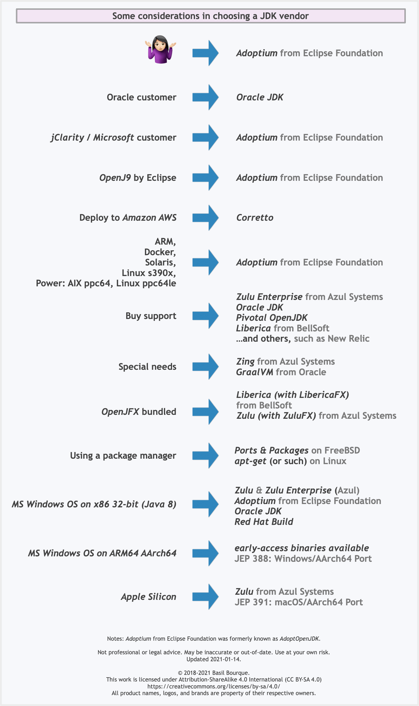

Oracle JDK
Oracle官方的商业JDK，收费。
Oracle OpenJDK
Oracle官方的商业JDK的社区版，免费。
Amazon Corretto
Amazon Corretto 是亚马逊基于 开放Java 开发工具包 (OpenJDK) 的免费、多平台、生产就绪型发行版。Corretto 提供长期支持，其中包括性能增强和安全修复。亚马逊在内部的数千种生产服务上运行 Corretto，并且 Corretto 已被证明能够兼容 Java SE 标准。借助 Corretto，您可以在常用操作系统（包括 Linux、Windows 和 macOS）上开发和运行 Java 应用程序。
BellSoft Liberica JDK
OpenJDK 的贡献者之一 BellSoft发布的基于OpenJDK的免费版。
AdoptOpenJDK
现属于Eclipse基金会的基于OpenJDK发布的免费版本，支持Oracle公司的HotSpot虚拟机和Eclipse基金会的OpenJ9虚拟机。
Azul Zulu OpenJDK
Azul 成立于 2002 年，是一家私营软件公司，总部位于加州桑尼维尔，在全球设有销售、技术支持和工程办事处，基于OpenJDK发布，免费。
SAP SapMachine
SAP是OpenJDK项目的贡献者之一，基于OpenJDK发布，免费。
Red Hat build of OpenJDK
Red Hat(红帽子)公司基于OpenJDK发布的免费版。
阿里巴巴Dragonwell JDK
Alibaba Dragonwell 是一款免费的, 生产就绪型Open JDK 发行版，提供长期支持，包括性能增强和安全修复。阿里巴巴拥有最丰富的Java应用场景，覆盖电商，金融，物流等众多领域，世界上最大的Java用户之一。Alibaba Dragonwell作为Java应用的基石，支撑了阿里经济体内所有的Java业务。Alibaba Dragonwell完全兼容 Java SE 标准，您可以在任何常用操作系统（包括 Linux、Windows 和 macOS）上开发 Java 应用程序， 运行时生产环境选择Alibaba Dragonwell。
腾讯Kona JDK
腾讯 Kona（Tencent Kona，TK）是免费、可立即投入生产的 OpenJDK 发行版。腾讯 Kona 基于 TencentJDK 开发，针对云应用场景定制新的功能及优化， 具备更快的云应用启动速度，更好的性能以及更为便捷的分析、诊断工具；此外，腾讯 Kona 服务于腾讯内部大量 Java 应用程序，提供稳定、高效的运行环境。
华为毕昇JDK
华为内部OpenJDK定制版的开源版本，是一个高性能、可用于生产环境的OpenJDK发行版。



reference
6.Java SE 各大厂商JDK大全一览表 | 霍小强博客